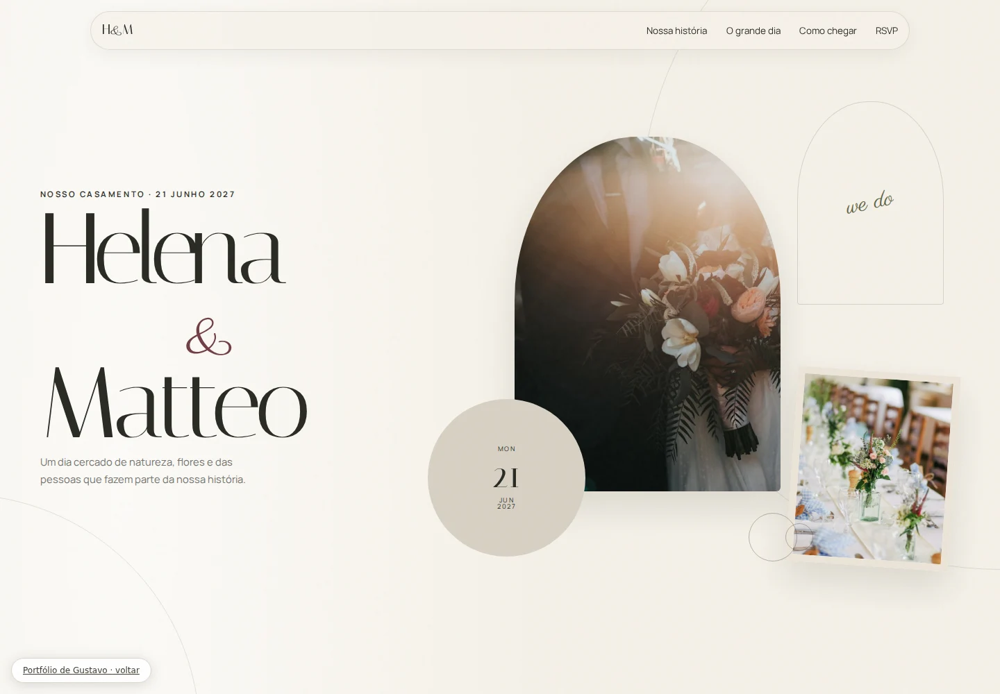

UM CONVITE PARA CELEBRAR
ESTUDO AUTORAL / 01

Helena & Matteo
O convite começa antes da primeira palavra. Um envelope interativo abre caminho para a história do casal, a contagem regressiva e os detalhes da celebração.
Sobre o projeto
A proposta
Traduzir a delicadeza de um convite impresso em uma experiência digital para explorar no celular.
O que explorar
A abertura do envelope, a navegação pela história, a localização e a confirmação de presença demonstrativa.
Contexto
Estudo de portfólio com casal e evento fictícios. O formulário demonstra a interação e não envia confirmações.